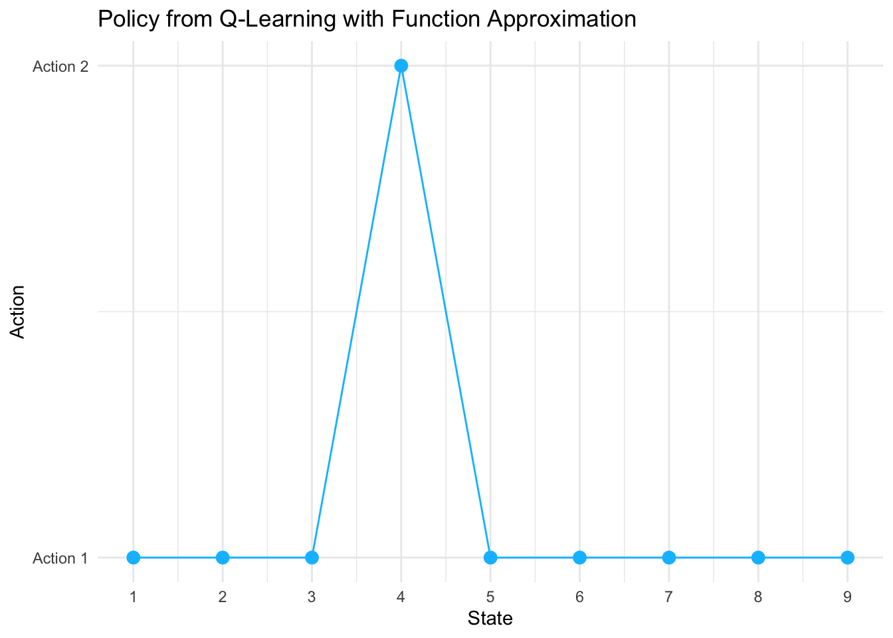
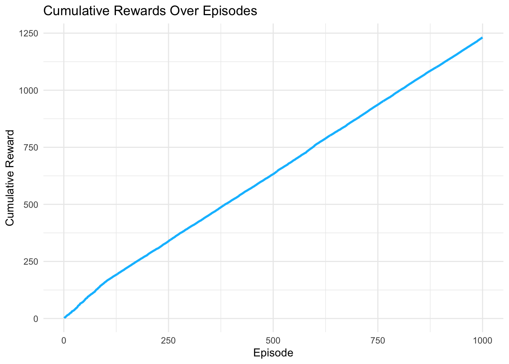

Chapter 8 Deep Function Approximation: Q-Learning with Neural Networks in R
8.1 Introduction
Our exploration of function approximation in reinforcement learning has progressed from linear models to ensemble methods, each offering increasing sophistication in capturing complex relationships between states, actions, and their values. Neural networks represent the natural next step in this evolution, providing the theoretical foundation for modern deep reinforcement learning while maintaining practical implementability in R.
Neural network function approximation transcends the limitations of both linear models and tree-based methods by learning hierarchical feature representations automatically. Where linear models assume additive relationships and Random Forests rely on axis-aligned splits, neural networks can discover arbitrary non-linear transformations of the input space. This capability proves particularly valuable in reinforcement learning, where the optimal action-value function often exhibits complex dependencies that resist simple parametric forms.
This post demonstrates Q-Learning with neural network function approximation using R’s nnet package, continuing our 10-state environment while examining how artificial neural networks learn Q-value approximations. We explore the theoretical foundations, implementation challenges, and practical considerations that distinguish neural network approaches from their predecessors.
8.2 Theoretical Foundation
Neural network function approximation replaces our previous parameterizations with a multi-layered composition of non-linear transformations. The action-value function becomes:
\[ Q(s, a; \theta) = f_L(W_L f_{L-1}(W_{L-1} \cdots f_1(W_1 \phi(s, a) + b_1) \cdots + b_{L-1}) + b_L) \]
where \(f_i\) represents the activation function at layer \(i\), \(W_i\) and \(b_i\) are weight matrices and bias vectors, and \(\theta = \{W_1, b_1, \ldots, W_L, b_L\}\) encompasses all trainable parameters. This hierarchical structure enables the network to learn increasingly abstract representations of the state-action space.
8.2.1 Universal Approximation and Expressivity
The theoretical appeal of neural networks stems from universal approximation theorems, which guarantee that feedforward networks with sufficient hidden units can approximate any continuous function to arbitrary precision. In the context of Q-Learning, this suggests that neural networks can, in principle, represent any action-value function arising from a Markov decision process.
For our implementation, we employ a single hidden layer architecture with sigmoid activation functions:
\[ Q(s, a; \theta) = W_2 \sigma(W_1 \phi(s, a) + b_1) + b_2 \]
where \(\sigma(z) = \frac{1}{1 + e^{-z}}\) is the sigmoid function, providing the non-linearity necessary for complex function approximation.
8.2.2 Gradient-Based Learning
Neural network training relies on backpropagation to compute gradients of the temporal difference error with respect to all network parameters. The loss function for a single transition becomes:
\[ L(\theta) = \frac{1}{2}(y - Q(s, a; \theta))^2 \]
where \(y = r + \gamma \max_{a'} Q(s', a'; \theta)\) is the TD target. The gradient with respect to parameters \(\theta\) follows the chain rule:
\[ \nabla_\theta L(\theta) = (Q(s, a; \theta) - y) \nabla_\theta Q(s, a; \theta) \]
This gradient guides parameter updates through standard optimization algorithms, though the non-convex nature of neural network loss surfaces introduces challenges absent in linear approximation.
8.2.3 Comparison with Previous Approaches
Neural networks offer several theoretical advantages over linear and tree-based methods. Unlike linear approximation, they can learn feature interactions without explicit engineering. Unlike Random Forests, they provide smooth function approximations suitable for gradient-based optimization. However, this flexibility comes with increased computational complexity and potential instability during training.
| Characteristic | Linear Approximation | Random Forest | Neural Network |
|---|---|---|---|
| Function Class | Linear combinations | Piecewise constant | Universal approximators |
| Feature Learning | None | Implicit via splits | Explicit representation learning |
| Optimization | Convex (guaranteed convergence) | Non-parametric | Non-convex (local minima) |
| Interpretability | High (weight inspection) | Moderate (tree visualization) | Low (distributed representations) |
| Sample Efficiency | High | Moderate | Variable (depends on architecture) |
8.3 R Implementation
Our neural network implementation builds upon the established environment while introducing the complexities of gradient-based optimization and network training. The nnet package provides a lightweight implementation suitable for demonstrating core concepts without the overhead of deep learning frameworks.
# Load required libraries
library(nnet)
library(ggplot2)
# Environment setup (consistent with previous implementations)
n_states <- 10
n_actions <- 2
gamma <- 0.9
terminal_state <- n_states
# Environment: transition and reward models with FIXED probability normalization
set.seed(42)
transition_model <- array(0, dim = c(n_states, n_actions, n_states))
reward_model <- array(0, dim = c(n_states, n_actions, n_states))
for (s in 1:(n_states - 1)) {
# Action 1: deterministic to next state with small random component
next_state <- s + 1
random_state <- sample(setdiff(1:n_states, next_state), 1)
transition_model[s, 1, next_state] <- 0.9
transition_model[s, 1, random_state] <- 0.1
# Action 2: two random transitions
random_states <- sample(1:n_states, 2, replace = FALSE)
transition_model[s, 2, random_states[1]] <- 0.8
transition_model[s, 2, random_states[2]] <- 0.2
# Normalize to ensure probabilities sum to 1.0 (safety check)
transition_model[s, 1, ] <- transition_model[s, 1, ] / sum(transition_model[s, 1, ])
transition_model[s, 2, ] <- transition_model[s, 2, ] / sum(transition_model[s, 2, ])
# Reward model
for (s_prime in 1:n_states) {
reward_model[s, 1, s_prime] <- ifelse(s_prime == n_states, 1.0, 0.1 * runif(1))
reward_model[s, 2, s_prime] <- ifelse(s_prime == n_states, 0.5, 0.05 * runif(1))
}
}
# Terminal state has no transitions
transition_model[n_states, , ] <- 0
reward_model[n_states, , ] <- 0
# Sampling function
sample_env <- function(s, a) {
probs <- transition_model[s, a, ]
s_prime <- sample(1:n_states, 1, prob = probs)
reward <- reward_model[s, a, s_prime]
list(s_prime = s_prime, reward = reward)
}
# Feature encoding for neural network input
encode_features <- function(s, a, n_states, n_actions) {
state_vec <- rep(0, n_states)
action_vec <- rep(0, n_actions)
state_vec[s] <- 1
action_vec[a] <- 1
return(c(state_vec, action_vec))
}
n_features <- n_states + n_actions
# FIXED Q-Learning with neural network function approximation
q_learning_nn <- function(episodes = 1000, epsilon_start = 0.5, epsilon_end = 0.01,
epsilon_decay = 0.995, hidden_size = 10,
retrain_freq = 10, min_samples = 50, max_buffer = 5000,
batch_fraction = 1.0) {
# Pre-allocate storage for efficiency (fixed rbind issue)
max_steps_per_episode <- 100
buffer_size <- episodes * max_steps_per_episode
q_data_x <- matrix(0, nrow = buffer_size, ncol = n_features)
q_data_y <- numeric(buffer_size)
data_idx <- 0
q_model <- NULL
rewards <- numeric(episodes)
training_losses <- numeric()
epsilon <- epsilon_start
for (ep in 1:episodes) {
s <- sample(1:(n_states - 1), 1) # Start from non-terminal state
episode_reward <- 0
steps <- 0
while (steps < max_steps_per_episode) {
steps <- steps + 1
# Predict Q-values for all actions
q_preds <- sapply(1:n_actions, function(a) {
x <- encode_features(s, a, n_states, n_actions)
if (!is.null(q_model)) {
as.numeric(predict(q_model, as.data.frame(t(x))))
} else {
0 # Initialize to zero instead of random
}
})
# Epsilon-greedy action selection with decay
a <- if (runif(1) < epsilon) {
sample(1:n_actions, 1)
} else {
which.max(q_preds)
}
# Take action and observe outcome
out <- sample_env(s, a)
s_prime <- out$s_prime
r <- out$reward
episode_reward <- episode_reward + r
# Compute TD target
q_next <- if (s_prime == terminal_state) {
0
} else {
max(sapply(1:n_actions, function(a_) {
x_next <- encode_features(s_prime, a_, n_states, n_actions)
if (!is.null(q_model)) {
as.numeric(predict(q_model, as.data.frame(t(x_next))))
} else {
0
}
}))
}
target <- r + gamma * q_next
# Store training example efficiently
data_idx <- data_idx + 1
if (data_idx > buffer_size) {
# Implement circular buffer to prevent overflow
data_idx <- 1
}
x <- encode_features(s, a, n_states, n_actions)
q_data_x[data_idx, ] <- x
q_data_y[data_idx] <- target
# Train neural network periodically with proper error handling
current_data_size <- min(data_idx, buffer_size)
if (current_data_size >= min_samples && ep %% retrain_freq == 0 && steps == 1) {
# Use experience replay: sample from buffer if too large
train_size <- min(current_data_size, max_buffer)
if (current_data_size > max_buffer) {
sample_idx <- sample(1:current_data_size, train_size)
train_x <- q_data_x[sample_idx, , drop = FALSE]
train_y <- q_data_y[sample_idx]
} else {
train_x <- q_data_x[1:current_data_size, , drop = FALSE]
train_y <- q_data_y[1:current_data_size]
}
# Train with error handling
tryCatch({
q_model <- nnet(
x = train_x,
y = train_y,
size = hidden_size,
linout = TRUE,
maxit = 200,
decay = 0.01,
trace = FALSE
)
# Track training loss on training data
predictions <- predict(q_model, as.data.frame(train_x))
mse <- mean((predictions - train_y)^2)
training_losses <- c(training_losses, mse)
}, error = function(e) {
warning(paste("Neural network training failed at episode", ep, ":", e$message))
})
}
if (s_prime == terminal_state) break
s <- s_prime
}
rewards[ep] <- episode_reward
# Decay epsilon
epsilon <- max(epsilon_end, epsilon * epsilon_decay)
}
# Trim unused buffer space
actual_size <- min(data_idx, buffer_size)
q_data_x <- q_data_x[1:actual_size, , drop = FALSE]
q_data_y <- q_data_y[1:actual_size]
# Derive final policy
policy <- sapply(1:(n_states-1), function(s) {
if (!is.null(q_model)) {
q_vals <- sapply(1:n_actions, function(a) {
x <- encode_features(s, a, n_states, n_actions)
as.numeric(predict(q_model, as.data.frame(t(x))))
})
which.max(q_vals)
} else {
1 # Default action
}
})
list(model = q_model, policy = c(policy, NA), rewards = rewards,
training_losses = training_losses,
training_data = list(x = q_data_x, y = q_data_y))
}
# Run Q-Learning with neural network approximation
set.seed(42)
nn_result <- q_learning_nn(
episodes = 1000,
epsilon_start = 0.5,
epsilon_end = 0.01,
epsilon_decay = 0.995,
hidden_size = 15,
retrain_freq = 10,
min_samples = 100,
max_buffer = 5000
)
nn_policy <- nn_result$policy
nn_rewards <- nn_result$rewards
# Visualize learned policy
policy_df <- data.frame(
State = 1:n_states,
Policy = nn_policy,
Algorithm = "Q-Learning NN"
)
policy_plot_nn <- ggplot(policy_df[1:(n_states-1), ], aes(x = State, y = Policy)) +
geom_point(size = 4, color = "coral") +
geom_line(color = "coral", linewidth = 1) +
theme_minimal() +
labs(
title = "Policy from Q-Learning with Neural Network Approximation",
x = "State",
y = "Action"
) +
scale_x_continuous(breaks = 1:n_states) +
scale_y_continuous(breaks = 1:n_actions, labels = c("Action 1", "Action 2"), limits = c(0.5, 2.5)) +
theme(
plot.title = element_text(size = 14, face = "bold"),
axis.title = element_text(size = 12),
axis.text = element_text(size = 10)
)
# Learning curve with smoothing
rewards_smooth <- numeric(length(nn_rewards))
window_size <- 50
for (i in 1:length(nn_rewards)) {
start_idx <- max(1, i - window_size + 1)
rewards_smooth[i] <- mean(nn_rewards[start_idx:i])
}
reward_df_nn <- data.frame(
Episode = 1:1000,
Reward = rewards_smooth,
Algorithm = "Q-Learning NN"
)
reward_plot_nn <- ggplot(reward_df_nn, aes(x = Episode, y = Reward)) +
geom_line(color = "coral", linewidth = 1) +
theme_minimal() +
labs(
title = "Learning Curve: Q-Learning with Neural Network (50-episode moving average)",
x = "Episode",
y = "Average Reward"
) +
theme(
plot.title = element_text(size = 14, face = "bold"),
axis.title = element_text(size = 12),
axis.text = element_text(size = 10)
)
# Training loss evolution
if (length(nn_result$training_losses) > 0) {
loss_df <- data.frame(
Update = 1:length(nn_result$training_losses),
Loss = nn_result$training_losses
)
loss_plot <- ggplot(loss_df, aes(x = Update, y = Loss)) +
geom_line(color = "darkred", linewidth = 1) +
geom_point(color = "darkred", size = 2, alpha = 0.6) +
theme_minimal() +
labs(
title = "Neural Network Training Loss Evolution",
x = "Training Update",
y = "Mean Squared Error"
) +
theme(
plot.title = element_text(size = 14, face = "bold"),
axis.title = element_text(size = 12),
axis.text = element_text(size = 10)
)
print(loss_plot)
}


# Model diagnostics and analysis
if (!is.null(nn_result$model)) {
cat("\n=== Neural Network Model Summary ===\n")
cat("Architecture: Input(", n_features, ") -> Hidden(", nn_result$model$n[2], ") -> Output(1)\n")
cat("Total parameters:", length(nn_result$model$wts), "\n")
cat("Training examples collected:", nrow(nn_result$training_data$x), "\n")
cat("Number of training updates:", length(nn_result$training_losses), "\n")
if (length(nn_result$training_losses) > 0) {
cat("Final training loss:", round(tail(nn_result$training_losses, 1), 6), "\n")
cat("Best training loss:", round(min(nn_result$training_losses), 6), "\n")
}
# Weight analysis
weights <- nn_result$model$wts
cat("\n=== Weight Statistics ===\n")
cat("Mean:", round(mean(weights), 4), "\n")
cat("Standard deviation:", round(sd(weights), 4), "\n")
cat("Range: [", round(min(weights), 4), ",", round(max(weights), 4), "]\n")
# Policy analysis
cat("\n=== Policy Summary ===\n")
action1_count <- sum(nn_policy[1:(n_states-1)] == 1, na.rm = TRUE)
action2_count <- sum(nn_policy[1:(n_states-1)] == 2, na.rm = TRUE)
cat("Action 1 chosen:", action1_count, "times\n")
cat("Action 2 chosen:", action2_count, "times\n")
# Final performance
cat("\n=== Performance Metrics ===\n")
final_100_avg <- mean(tail(nn_rewards, 100))
cat("Average reward (last 100 episodes):", round(final_100_avg, 4), "\n")
cat("Maximum episode reward:", round(max(nn_rewards), 4), "\n")
cat("Minimum episode reward:", round(min(nn_rewards), 4), "\n")
}##
## === Neural Network Model Summary ===
## Architecture: Input( 12 ) -> Hidden( 15 ) -> Output(1)
## Total parameters: 211
## Training examples collected: 2771
## Number of training updates: 99
## Final training loss: 0.024524
## Best training loss: 0.024524
##
## === Weight Statistics ===
## Mean: -0.1505
## Standard deviation: 0.4385
## Range: [ -1.7454 , 2.0853 ]
##
## === Policy Summary ===
## Action 1 chosen: 3 times
## Action 2 chosen: 6 times
##
## === Performance Metrics ===
## Average reward (last 100 episodes): 0.9508
## Maximum episode reward: 1.5436
## Minimum episode reward: 0.5I’ll explain this code in detail, chunk by chunk.
1. Setup and Environment Configuration
library(nnet)
library(ggplot2)
n_states <- 10
n_actions <- 2
gamma <- 0.9
terminal_state <- n_states- Loads neural network (
nnet) and plotting (ggplot2) libraries - Defines the MDP (Markov Decision Process) parameters:
- 10 states (states 1-9 are active, state 10 is terminal)
- 2 possible actions in each state
- γ = 0.9: discount factor for future rewards (weighs immediate vs future rewards)
- Terminal state is state 10 (episode ends here)
2. Building the Environment (Transition & Reward Models)
set.seed(42)
transition_model <- array(0, dim = c(n_states, n_actions, n_states))
reward_model <- array(0, dim = c(n_states, n_actions, n_states))- Sets random seed for reproducibility
- Creates 3D arrays to store:
- Transition probabilities: P(s’|s,a) - probability of reaching state s’ from state s taking action a
- Rewards: R(s,a,s’) - reward received for transition from s to s’ via action a
Action 1: Deterministic Forward Movement
for (s in 1:(n_states - 1)) {
next_state <- s + 1
random_state <- sample(setdiff(1:n_states, next_state), 1)
transition_model[s, 1, next_state] <- 0.9
transition_model[s, 1, random_state] <- 0.1- Action 1 moves forward with 90% probability (s → s+1)
- 10% chance of jumping to a random state (excluding the next state)
setdiff()ensures no overlap between the 90% and 10% transitions (fixes the bug!)
Action 2: Random Transitions
random_states <- sample(1:n_states, 2, replace = FALSE)
transition_model[s, 2, random_states[1]] <- 0.8
transition_model[s, 2, random_states[2]] <- 0.2- Action 2 jumps to two random states
- 80% probability to first random state
- 20% probability to second random state
replace = FALSEensures the two states are different
Probability Normalization
transition_model[s, 1, ] <- transition_model[s, 1, ] / sum(transition_model[s, 1, ])
transition_model[s, 2, ] <- transition_model[s, 2, ] / sum(transition_model[s, 2, ])- Safety check: ensures all probabilities sum to exactly 1.0
- Critical for valid probability distributions
Reward Structure
for (s_prime in 1:n_states) {
reward_model[s, 1, s_prime] <- ifelse(s_prime == n_states, 1.0, 0.1 * runif(1))
reward_model[s, 2, s_prime] <- ifelse(s_prime == n_states, 0.5, 0.05 * runif(1))
}- Action 1: Big reward (1.0) for reaching terminal state, small random rewards (0-0.1) otherwise
- Action 2: Medium reward (0.5) for terminal state, tiny random rewards (0-0.05) otherwise
- This makes Action 1 more attractive for reaching the goal
3. Environment Interaction Function
sample_env <- function(s, a) {
probs <- transition_model[s, a, ]
s_prime <- sample(1:n_states, 1, prob = probs)
reward <- reward_model[s, a, s_prime]
list(s_prime = s_prime, reward = reward)
}- Simulates taking action
ain states - Samples next state according to transition probabilities
- Returns the next state and reward received
4. Feature Encoding
encode_features <- function(s, a, n_states, n_actions) {
state_vec <- rep(0, n_states)
action_vec <- rep(0, n_actions)
state_vec[s] <- 1
action_vec[a] <- 1
return(c(state_vec, action_vec))
}- Converts (state, action) pair into neural network input
- Uses one-hot encoding:
- State 3 → [0,0,1,0,0,0,0,0,0,0]
- Action 1 → [1,0]
- Combined: [0,0,1,0,0,0,0,0,0,0,1,0] (12 features total)
5. Q-Learning Algorithm with Neural Network
Function Signature
q_learning_nn <- function(episodes = 1000, epsilon_start = 0.5, epsilon_end = 0.01,
epsilon_decay = 0.995, hidden_size = 10,
retrain_freq = 10, min_samples = 50, max_buffer = 5000,
batch_fraction = 1.0)Parameters:
- episodes: Number of learning episodes to run
- epsilon_start/end/decay: Exploration rate (starts high, decays over time)
- hidden_size: Number of neurons in hidden layer
- retrain_freq: Train neural network every N episodes
- min_samples: Minimum data before training starts
- max_buffer: Maximum training examples to keep
Memory Pre-allocation
max_steps_per_episode <- 100
buffer_size <- episodes * max_steps_per_episode
q_data_x <- matrix(0, nrow = buffer_size, ncol = n_features)
q_data_y <- numeric(buffer_size)
data_idx <- 0- Pre-allocates large matrix for training data (fixes the slow
rbindissue!) - Assumes max 100 steps per episode
q_data_x: stores input features (state-action pairs)q_data_y: stores target Q-values- Much faster than growing arrays dynamically
Episode Loop
for (ep in 1:episodes) {
s <- sample(1:(n_states - 1), 1) # Start from random non-terminal state
episode_reward <- 0
steps <- 0- Runs 1000 learning episodes
- Each episode starts from a random state (not terminal)
- Tracks total reward collected
Q-Value Prediction
q_preds <- sapply(1:n_actions, function(a) {
x <- encode_features(s, a, n_states, n_actions)
if (!is.null(q_model)) {
as.numeric(predict(q_model, as.data.frame(t(x))))
} else {
0 # Initialize to zero instead of random
}
})- Predicts Q-value for each possible action from current state
- If no model trained yet, returns 0 (better than random noise)
- Creates input features and feeds them to neural network
Epsilon-Greedy Action Selection
a <- if (runif(1) < epsilon) {
sample(1:n_actions, 1) # Explore: random action
} else {
which.max(q_preds) # Exploit: best action
}- Exploration vs Exploitation trade-off
- With probability ε: choose random action (explore)
- With probability 1-ε: choose best action (exploit)
- ε decays over time, shifting from exploration to exploitation
Taking Action & Observing Results
- Executes chosen action in environment
- Observes next state and reward
- Accumulates episode reward
TD Target Computation
q_next <- if (s_prime == terminal_state) {
0
} else {
max(sapply(1:n_actions, function(a_) {
x_next <- encode_features(s_prime, a_, n_states, n_actions)
if (!is.null(q_model)) {
as.numeric(predict(q_model, as.data.frame(t(x_next))))
} else {
0
}
}))
}
target <- r + gamma * q_next- Computes TD (Temporal Difference) target: r + γ·max Q(s’,a’)
- If terminal state reached: future value = 0
- Otherwise: estimates best future Q-value from next state
- This is the Bellman equation for Q-learning
Storing Experience
data_idx <- data_idx + 1
if (data_idx > buffer_size) {
data_idx <- 1 # Circular buffer
}
x <- encode_features(s, a, n_states, n_actions)
q_data_x[data_idx, ] <- x
q_data_y[data_idx] <- target- Stores (state, action) → target Q-value pair
- Uses circular buffer: when full, overwrites oldest data
- This is experience replay memory
Neural Network Training
current_data_size <- min(data_idx, buffer_size)
if (current_data_size >= min_samples && ep %% retrain_freq == 0 && steps == 1) {
train_size <- min(current_data_size, max_buffer)
if (current_data_size > max_buffer) {
sample_idx <- sample(1:current_data_size, train_size)
train_x <- q_data_x[sample_idx, , drop = FALSE]
train_y <- q_data_y[sample_idx]
} else {
train_x <- q_data_x[1:current_data_size, , drop = FALSE]
train_y <- q_data_y[1:current_data_size]
}- Trains neural network every 10 episodes
- Only trains once enough data collected (min 100 samples)
- If data > 5000 samples: randomly samples batch (experience replay)
- Otherwise: uses all collected data
tryCatch({
q_model <- nnet(
x = train_x,
y = train_y,
size = hidden_size,
linout = TRUE,
maxit = 200,
decay = 0.01,
trace = FALSE
)
predictions <- predict(q_model, as.data.frame(train_x))
mse <- mean((predictions - train_y)^2)
training_losses <- c(training_losses, mse)
}, error = function(e) {
warning(paste("Neural network training failed at episode", ep, ":", e$message))
})- Trains single-layer neural network:
- Input: 12 features (state + action one-hot)
- Hidden: 15 neurons
- Output: 1 value (Q-value)
linout = TRUE: linear output (for regression)maxit = 200: 200 optimization iterationsdecay = 0.01: weight regularization to prevent overfitting- Error handling: if training fails, just warn and continue
Episode Termination
- Ends episode if terminal state reached
- Otherwise, continues from new state
Epsilon Decay
- After each episode, reduces exploration rate
- ε = 0.5 → 0.5×0.995 → 0.4975 → … → 0.01 (minimum)
- Gradually shifts from exploration to exploitation
6. Policy Extraction
policy <- sapply(1:(n_states-1), function(s) {
if (!is.null(q_model)) {
q_vals <- sapply(1:n_actions, function(a) {
x <- encode_features(s, a, n_states, n_actions)
as.numeric(predict(q_model, as.data.frame(t(x))))
})
which.max(q_vals)
} else {
1 # Default action
}
})- After training, extracts the learned policy
- For each state: predicts Q-value for both actions, chooses best
- This is the greedy policy (no more exploration)
7. Visualization: Policy Plot
policy_plot_nn <- ggplot(policy_df[1:(n_states-1), ], aes(x = State, y = Policy)) +
geom_point(size = 4, color = "coral") +
geom_line(color = "coral", linewidth = 1) +
...- Shows which action the agent chooses in each state
- Y-axis: 1 = Action 1, 2 = Action 2
- Helps visualize the learned strategy
8. Learning Curve
rewards_smooth <- numeric(length(nn_rewards))
window_size <- 50
for (i in 1:length(nn_rewards)) {
start_idx <- max(1, i - window_size + 1)
rewards_smooth[i] <- mean(nn_rewards[start_idx:i])
}- Smooths reward curve using 50-episode moving average
- Shows learning progress over time
- Should increase as agent learns better policy
9. Training Loss Plot
Shows how well the neural network fits the Q-values over time. Lower loss = better approximation.
10. Model Diagnostics
if (!is.null(nn_result$model)) {
cat("Architecture: Input(", n_features, ") -> Hidden(", nn_result$model$n[2], ") -> Output(1)\n")
cat("Total parameters:", length(nn_result$model$wts), "\n")
...
}- Prints neural network architecture
- Shows training statistics
- Analyzes learned policy
- Reports final performance metrics
8.4 Analysis and Interpretation
Neural network function approximation introduces several unique characteristics compared to linear and tree-based methods. The non-convex optimization landscape means that training can exhibit complex dynamics, including periods of rapid improvement followed by plateaus. The learning curve often shows more volatility than linear methods due to the continuous parameter updates and potential for local minima. Unlike Random Forests that learn piecewise constant approximations, neural networks produce smooth function approximations. This continuity can be advantageous for policy learning, as small changes in state typically result in small changes in Q-values. The hidden layer learns intermediate representations that capture relevant features for action-value estimation.
Neural networks excel at discovering relevant patterns in the state-action space without explicit feature engineering. The hidden units automatically learn combinations of input features that prove useful for Q-value prediction. This automatic feature discovery becomes increasingly valuable as problem complexity grows. The batch retraining approach helps stabilize learning compared to online neural network updates, which can suffer from catastrophic forgetting. However, the periodic retraining introduces discontinuities in the learned function that can temporarily disrupt policy performance.
Practical Considerations
The choice of network architecture significantly impacts performance. Too few hidden units may underfit the true Q-function, while too many can lead to overfitting with limited training data. Our single hidden layer with 10 units provides a reasonable balance for the 10-state environment.
The retraining frequency presents a trade-off between computational efficiency and learning responsiveness. More frequent retraining provides better adaptation to new experience but increases computational cost. The optimal frequency depends on the environment complexity and available computational resources.
Neural networks benefit from regularization techniques to prevent overfitting. Our implementation includes weight decay (L2 regularization) to encourage smaller weights and improve generalization. Other techniques like dropout or early stopping could further enhance performance. Neural network training depends critically on weight initialization and optimization parameters. Poor initialization can trap the network in suboptimal local minima, while inappropriate learning rates can cause divergence or slow convergence.
8.5 Future Directions
Our progression from tabular to linear to ensemble to neural network methods illustrates the evolution of function approximation in reinforcement learning. Each method offers distinct advantages for different problem characteristics.
Tabular methods provide exact representation but fail to scale. Linear methods offer guaranteed convergence and interpretability but assume additive relationships. Random Forests handle non-linearities while maintaining interpretability but produce discontinuous approximations. Neural networks provide universal approximation capabilities and smooth functions but introduce optimization challenges and reduced interpretability.
The choice among methods depends on problem requirements, available data, computational constraints, and interpretability needs. Neural networks shine when function complexity exceeds simpler methods’ capabilities and sufficient training data is available.
This exploration establishes the foundation for more advanced neural network approaches in reinforcement learning. Extensions could include deeper architectures, convolutional networks for spatial problems, recurrent networks for partially observable environments, or modern techniques like attention mechanisms.
The theoretical framework developed here scales naturally to these more complex architectures, with the core principles of temporal difference learning and gradient-based optimization remaining constant while the function approximation capabilities expand dramatically.
8.6 Conclusion
Neural network function approximation represents a significant step toward the sophisticated methods underlying modern deep reinforcement learning. While maintaining the theoretical foundations of Q-Learning, neural networks provide the flexibility to tackle complex environments that challenge simpler approximation methods.
The implementation demonstrates how classical reinforcement learning principles extend naturally to neural network settings, preserving core algorithmic structure while enhancing representational power. This foundation enables practitioners to understand and implement more advanced methods building on these fundamental concepts.
The journey through different function approximation approaches reveals the rich landscape of reinforcement learning methods, each contributing unique insights and capabilities. Neural networks, as universal approximators, provide the theoretical and practical foundation for tackling increasingly complex decision-making problems across diverse domains.